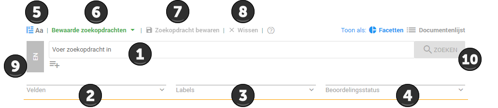
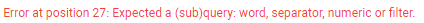
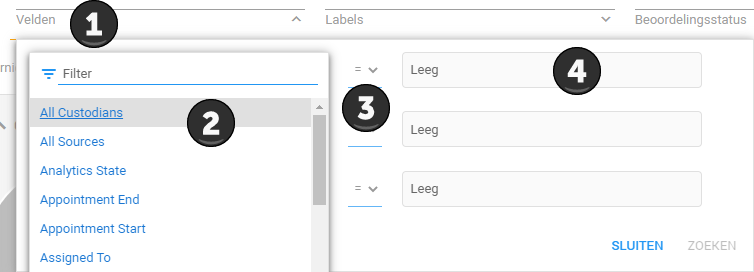

Aan de hand van een zoekopdracht is het mogelijk om de dataset te doorzoeken, dit is vergelijkbaar met bijvoorbeeld een zoekopdracht in Google. ZyLAB ONE biedt veel mogelijkheden om uw zoekopdracht te verfijnen. Hieronder, in Uitleg 2, vindt u een overzicht van alle zoekopties. Om een zoekopdracht uit te voeren kunt u gebruik maken van de zoekbalk, deze wordt hieronder in Uitleg 1 verder toegelicht.
De zoekbalk ziet er als volgt uit:

Voor het opstellen van een goede zoekopdracht in ZyLAB ONE kunt u het stappenplan gebruiken die hieronder wordt weergegeven. Daaronder, in voorbeeld 1, vindt u een voorbeeld van de toepassing van dit stappenplan in de vorm van een query c.q. zoekopdracht. Het opstellen van een goede zoekopdracht kan veel tijd kosten en vergt ervaring. ZyLAB kan hierbij ondersteuning bieden, neem hiervoor contact op met uw contactpersoon binnen ZyLAB.
Stappenplan voor het opstellen van een zoekopdracht in ZyLAB ONE:
U dient te beginnen met het selecteren van trefwoorden. Deze trefwoorden stelt u op, op basis van de documenten die u wilt vinden. Goede trefwoorden gaan meestal over de volgende onderwerpen:
De tijdsperiode van de gezochte documenten.
De vindplaats of de eigenaar van de documenten.
Het bestuurlijk onderwerp.
Goede trefwoorden zijn meestal uniek, dus bijvoorbeeld: een naam, ordernummer, citaat, niet vaak gebruikt woord etc.
Indien iets niet klopt in de zoekopdracht, geeft ZyLAB ONE in een error aan op de plek in de zoekopdracht waar de fout zich bevindt. In het onderstaande voorbeeld is er waarschijnlijk een fout gemaakt bij het 27ste karakter van de zoekopdracht.

Krijgt u de fout niet opgelost? Neem contact op met ZyLAB.
Gemeente X heeft een Woo-verzoek ontvangen. De verzoeker wil graag alle documenten inzien die betrekking hebben op het nieuw aangelegde kunstgras voetbalveld achter zijn huis, liggende aan de straat de Bullewijk. Het project van de aanleg van het kunstgras voetbalveld is behandeld door de ambtenaar Piet Smit. De aanleg is gedaan door het startup bedrijf Nepveld b.v.
Als trefwoorden pakken we: Piet Smit, kunstgras, voetbalveld, Bullewijk, Nepveld b.v. Deze trefwoorden hebben verschillende manieren hoe ze in de documenten terug kunnen komen.
| Piet Smit | jeugdzorg | Voetbalveld | Bullewijk | Nepveld b.v. |
| P. Smit | jeugd zorg | Voetbal veld | Bullenwijk (spelfout) | Nepveld |
| Heer Smit | jongren (spelfout) zorg | Voetbalveldje | Nep veld | |
| Hr. Smit | Voetbal veldje | |||
| Meneer Smit | ||||
| Mr. Smit | ||||
| Pietje |
Er zijn meer variaties mogelijk, deze zijn ten behoeve van dit voorbeeld buiten beschouwing gelaten.
Indien Nepveld b.v. een Duits bedrijf was geweest, had het ook interessant kunnen zijn om kunstgras in het Duits op te nemen.
We gaan de trefwoorden nu zo aanpassen met gebruikmaking van de wildcard dat we alle mogelijkheden kunnen vinden. U kunt ook elke vervoeging apart opnemen.
| Piet Smit, Pietje, ?r. Smit, Heer Smit, Meneer Smit | jeugdzorg~1, jeugd zorg, jongeren~1 zorg | Voetbalveld~1, voetbal veld, voetbal veldje, voetbalveldje~1 | Bullewijk~1 | Nepveld~1, Nepveld b.v. |
Wanneer we de trefwoorden testen in met batch zoeken blijkt dat de trefwoorden Nepveld~1, synthetisch~1 gras, pietje, heer Smit en *r, Smit niet voorkomen in de documenten. Van de overgebleven trefwoorden maken we een quorum search.
1 OF {Piet Smit, Meneer Smit, kunstgras~1, kunst gras, Voetbalveld~1, voetbal veld, Voetbal veldje, voetbalveldje~1, Bullewijk~1, Nepveld~1}
Helaas vinden we ook nog veel documenten die niks met de zaak te maken hebben. We zien al snel dat elk relevant document altijd de naam Piet Smit bevat. Dit passen we toe op de zoekopdracht.
Piet Smit AND 1 OF {kunstgras~1, kunst gras, Voetbalveld~1, voetbal veld, Voetbal veldje, voetbalveldje~1, Bullewijk~1, Nepveld~1}
Met deze zoekopdracht worden vrijwel alleen maar relevante documenten gevonden.
| Zoekopdracht | Zoekresultaten | Uitleg | |
| Trefwoorden | zylab | ZyLAB, zylab, ZYLAB, zy-lab, etc. | Met trefwoorden vindt u het woord precies zoals het geschreven is. Een uitzondering is het - teken. Deze wordt altijd gevonden. |
| email en e-mail | |||
| Boolean | zylab AND gemeente | ZyLAB en gemeente, maar niet alleen ZyLAB of alleen gemeente |
AND betekent dat beide trefwoorden gevonden moeten worden.
|
| NOT gemeente | Alles waar gemeente niet in voorkomt. | NOT betekent dat dit trefwoord niet in het document mag staan. | |
| ZyLAB OR gemeente | ZyLAB, gemeente, ZyLAB gemeente | OR betekent dat 1 van 2 (of meer) in het document moeten staan. | |
| ZyLAB AND NOT gemeente | ZyLAB, maar niet gemeente | AND NOT betekent dat het eerste trefwoord wel in een document moet staan en het tweede trefwoord niet. | |
| Zinnen | ZyLAB ONE wordt gebruikt voor Woo-verzoeken. | ZyLAB ONE wordt gebruikt voor Woo-verzoeken. | Door woorden achter elkaar te plaatsen kan op zinnen of zinsdelen worden gezocht. |
| Fuzzy | computer~1 | computer, computers, komputer, maar ook compute8 | Een fuzzy van 1 betekent dat 1 karakter mag afwijken in het woord. Dit betekent dat het woord 1 karakter langer of korter mag zijn of dat 1 letter een andere letter mag zijn. |
| computer~2 | computer, computers, komputers, conpuker, canputer | Een fuzzy van 2 betekent dat 2 karakters verschillend mogen zijn. | |
| Wildcards | ?oor | boor, voor, koor, maar ook 7oor | Alleen het karakter dat is vervangen door de ? mag afwijken. |
| *oor | boor, voor, daarvoor, kerkkoor, 234oor | Kan voor of na een gedeelte van een woord geplaatst worden. Alles mag afwijken wat voor of na het * teken staat. | |
| voor+ | voor, voorr, voorrrrrrr | De letter waar het + teken achter staat mag meerdere keren achter elkaar voorkomen. | |
| bo{1,3}k | bok, book, boook, maar niet booook | De letter waar {1,3} achter staat mag 1, 2 of 3 keer voorkomen. De cijfers kunt u naar wens aanpassen. | |
| [a-m]oor | boor, koor, joor, maar niet voor | Het karakter dat wordt vervangen door [a-m] mag alleen een letter tussen A en M zijn. De letters in de zoekopdracht kunnen naar wens worden aangepast. | |
| [^a-m]oor | voor, xoor, maar niet boor or koor | Het karakter dat wordt vervangen mag niet een letter tussen A en M zijn. De letters in de zoekopdracht kunnen naar wens worden aangepast. | |
| Number range | <10 | 4, 8, -9, -73 maar niet 16 | Het getal moet onder de 10 zijn. |
| <=10 | 4, 8, 10, -84, maar niet 11 | Het getal moet onder of gelijk aan 10 zijn. | |
| =10 | 10 maar niet 6 of -10 | Het getal moet 10 zijn. | |
| <>10 | 6, -10, 87, maar niet 10 | Het getal mag alles behalve 10 zijn. | |
| >10 | 17, 89, maar niet 7 of -23 | Het getal moet meer dan 10 zijn. | |
| >=10 | 10, 17, 809 maar niet 9 of -10 | Het getal moet meer of gelijk aan 10 zijn. | |
| Proximity | Ik w/1 Jan | 'Ik heet Jan', 'ik ben Jan', 'Jan ken ik' maar niet 'ik ken een Jan'. | Er mag 1 woord tussen de twee trefwoorden staan. Het getal kan naar wens aangepast worden. |
| Ik p/1 Jan | 'Ik heet Jan', 'ik ben Jan', maar niet 'Jan ken ik' of 'ik ken een Jan' | Er mag 1 woord tussen de twee trefwoorden staan, maar het eerste trefwoord moet altijd eerder voorkomen dan het tweede trefwoord. Het getal in de zoekopdracht kan naar wens worden aangepast. | |
| Field Filter | Datum=01-01-1990 | Alles waar een veld datum is waar 01-01-1990 in staat. | Met Field Filter zoekt u op de metadata van het document, niet op de tekst in het document. Meer informatie hierover vindt u in uitleg 14 hieronder. |
| Quorum | 2 of {Jan, Jaap, Joop} |
Documenten waar Jan, Jaap, Joop in voorkomt.
Documenten waar Jan, Joop in voorkomt. Documenten waar Jan, Jaap in voorkomt. Documenten waar Jaap, Joop in voorkomt. Maar niet documenten waar alleen Jan, Jaap of Joop in voorkomt. |
Er moeten minimaal 2 van de 3 trefwoorden in een document voorkomen. De trefwoorden kunt u zelf bepalen en het getal kunt u ook naar wens aanpassen. |
| Queries | 1 of {Jan, ik w/1 Jaap NOT Joop} | Documenten waar Jan of documenten waar 'ik' binnen 1 woord van Jaap staat en Joop niet in voorkomt | Queries is het gebruiken van meerdere zoekmogelijkheden tegelijkertijd. |
| Audio en video | Ik ben Jan | Zal alle video en audio documenten vinden waarin wordt gezegd 'ik ben Jan'. | Het is mogelijk om in audio en video te zoeken. Momenteel is dit alleen in Silverlight. In de toekomst wordt dit aan ZyLAB ONE toegevoegd. |
Er zijn twee verschillende manieren van zoeken:
Er kan gezocht worden in de tekst van de documenten.
Er kan gezocht worden in de metadata van de documenten, oftewel de informatie over de documenten.
Met de field filter is het mogelijk om te zoeken in de metadata van de documenten.
Metadata zijn gegevens die zijn bekend zijn over een document, die niet in het document zelf staan. Denk hierbij aan de bestandsnaam, het type bestand, wanneer het document is aangemaakt, door wie het is aangemaakt, wanneer het voor het laatst is opgeslagen, etc. Soms kan het interessant zijn om in de metadata te zoeken wanneer u bijvoorbeeld documenten zoekt die door een bepaalde medewerker zijn gemaakt.
Dit kunt u doen door onder de zoekbalk op Velden te klikken, zie 1. Vervolgens opent er een nieuw venster hieronder. Als u op Selecteer een veld klikt opent u een lijst, zie 2. In deze lijst staan alle soorten metadata. Veel van deze opties zullen niet interessant voor u zijn. Klik op het gewenste metadata soort. Bij 3 kunt u vervolgens selecteren of u wilt dat het document deze metadata moet bevatten, of juist niet moet bevatten. Bij 4 vult u vervolgens in wat de inhoud van deze metadata precies moet zijn.

In het geval u emails wilt zien die vanaf een bepaald domein zijn gestuurd selecteerd u het veld Email Senders Domain en voert u bij leeg het betreffende domein in. Als u hierop zoekt vindt u alle emails die vanaf het betreffende domein zijn verstuurd.